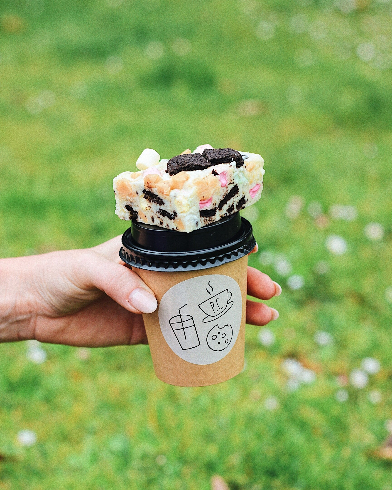
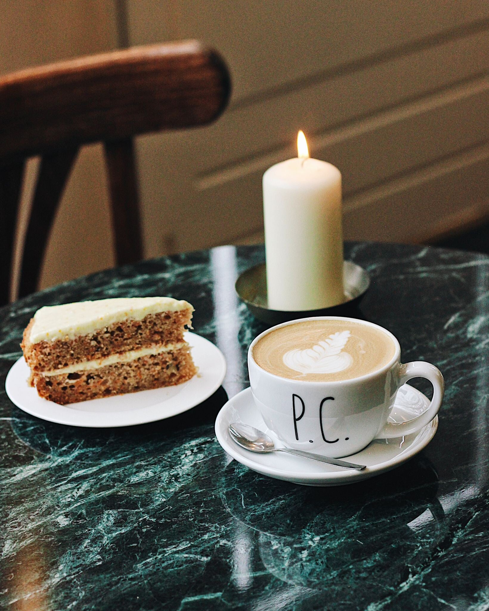
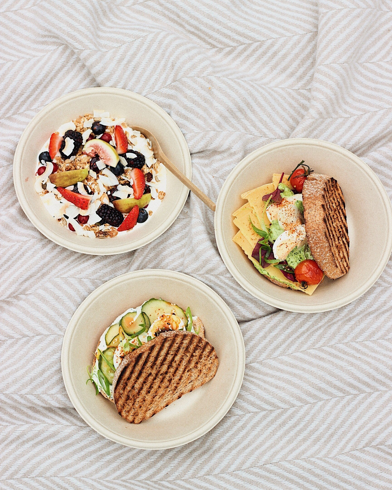

Het fijnste plekje. Aan het park.
Specialty koffie, gezonde sapjes en speciale frisjes, homemade cookies en sweets, bowls en sandwiches. Even tot rust komen — in het café of buiten in het park.

De ultieme spot. Voor brunch en koffie.
park café is de ultieme spot voor een lekker kopje specialty koffie, een gezond sapje, speciale frisjes, homemade cookies, sweets, bowls en sandwiches.
Een fijn plekje om even tot rust te komen — in het café of buiten in het park.

Drie dingen waar we goed in zijn.
Specialty coffee
Vers gezet zoals het hoort — espresso, filter of iets daartussenin. Vraag aan de bar wat er nu draait.
Juices & frisjes
Verse sapjes en speciale frisjes voor wie iets gezonds of iets nieuws wil. Wisselt mee met het seizoen.
Brunch & sweets
Bowls, sandwiches met warm brie of iberico, banana bread, sticky cinnamon rolls — en wat de keuken die dag heeft. Bekijk de kaart.

Binnen of buiten. Het park ligt voor de deur.
Park café ligt aan de Prins Bernhardstraat — een paar stappen van de groene rand van het park. Pak een tafel binnen of een plekje in het zonnetje en blijf zo lang als je wilt.
Of het nou voor een snelle koffie is of een uitgebreide brunch — er is altijd een plekje vrij.
Goeie koffie. Echte verhalen.
Een paar woorden van mensen die langskwamen. Voor de rest — lees gerust mee op Google.
Lees alle reviews op GoogleWe kijken uit naar je komst.
Geen reservering nodig voor een gewone koffie of brunch — kom gewoon langs. Voor een picknick of high tea kun je vooraf een berichtje sturen.
- Maandag9:00 — 17:00
- Dinsdag9:00 — 17:00
- Woensdag9:00 — 17:00
- Donderdag9:00 — 17:00
- Vrijdag9:00 — 17:00
- Zaterdag9:00 — 17:00
- Zondag9:00 — 17:00